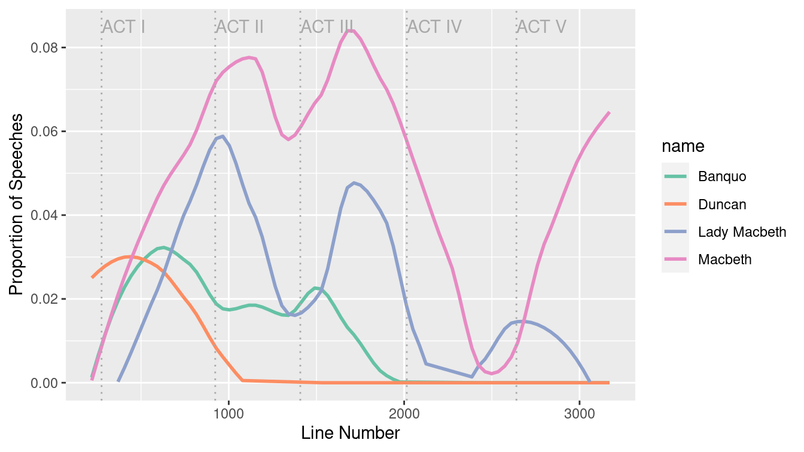
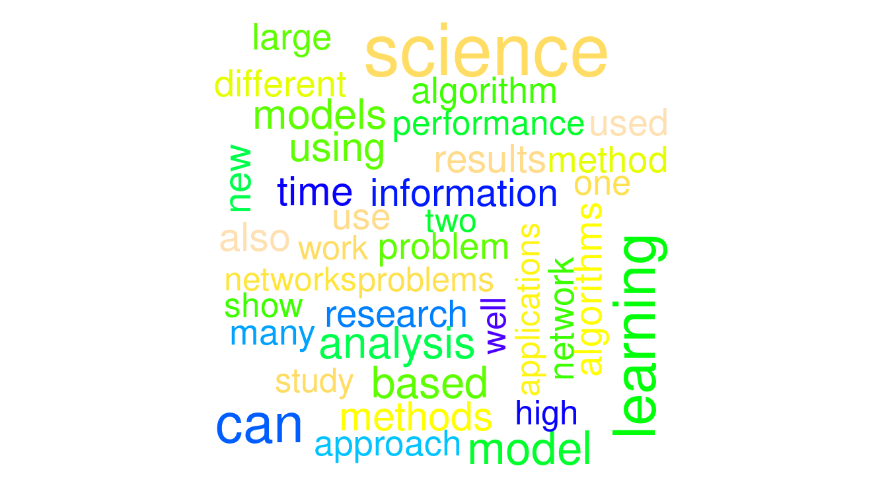
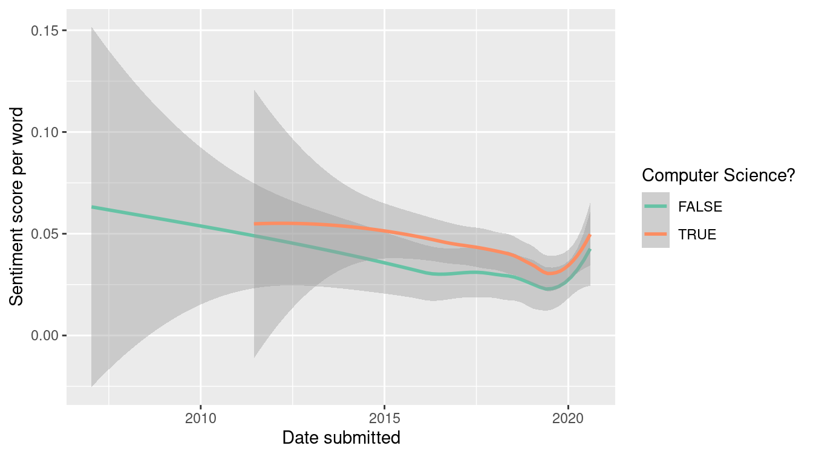

Chapter 19 Text as data
So far, we have focused primarily on numerical data, but there is a whole field of research that focuses on unstructured textual data. Fields such as natural language processing and computational linguistics work directly with text documents to extract meaning algorithmically. Not surprisingly, the fact that computers are really good at storing text, but not very good at understanding it, whereas humans are really good at understanding text, but not very good at storing it, is a fundamental challenge.
Processing text data requires an additional set of wrangling skills. In this chapter, we will introduce how text can be ingested, how corpora (collections of text documents) can be created, sentiments extracted, patterns described, and how regular expressions can be used to automate searches that would otherwise be excruciatingly labor-intensive.
19.1 Regular expressions using Macbeth
As noted previously, working with textual data requires new tools. In this section, we introduce the powerful grammar of regular expressions.
19.1.1 Parsing the text of the Scottish play
Project Gutenberg contains the full-text for all of William Shakespeare’s plays.
In this example, we will use text mining techniques to explore The Tragedy of Macbeth.
The text can be downloaded directly from Project Gutenberg.
Alternatively, the Macbeth_raw object is also included in the mdsr package.
library(tidyverse)
library(mdsr)
macbeth_url <- "http://www.gutenberg.org/cache/epub/1129/pg1129.txt"
Macbeth_raw <- RCurl::getURL(macbeth_url)data(Macbeth_raw)
Note that Macbeth_raw is a single string of text (i.e., a character vector of length 1) that contains the entire play. In order to work with this, we want to split this single string into a vector of strings using the str_split() function from the stringr. To do this, we just have to specify the end-of-line character(s), which in this case are: \r\n.
# str_split returns a list: we only want the first element
macbeth <- Macbeth_raw %>%
str_split("\r\n") %>%
pluck(1)
length(macbeth)[1] 3194Now let’s examine the text. Note that each speaking line begins with two spaces, followed by the speaker’s name in capital letters.
macbeth[300:310] [1] "meeting a bleeding Sergeant."
[2] ""
[3] " DUNCAN. What bloody man is that? He can report,"
[4] " As seemeth by his plight, of the revolt"
[5] " The newest state."
[6] " MALCOLM. This is the sergeant"
[7] " Who like a good and hardy soldier fought"
[8] " 'Gainst my captivity. Hail, brave friend!"
[9] " Say to the King the knowledge of the broil"
[10] " As thou didst leave it."
[11] " SERGEANT. Doubtful it stood," The power of text mining comes from quantifying ideas embedded in the text. For example, how many times does the character Macbeth speak in the play? Think about this question for a moment. If you were holding a physical copy of the play, how would you compute this number? Would you flip through the book and mark down each speaking line on a separate piece of paper? Is your algorithm scalable? What if you had to do it for all characters in the play, and not just Macbeth? What if you had to do it for all 37 of Shakespeare’s plays? What if you had to do it for all plays written in English?
Naturally, a computer cannot read the play and figure this out, but we can find all instances of Macbeth’s speaking lines by cleverly counting patterns in the text.
macbeth_lines <- macbeth %>%
str_subset(" MACBETH")
length(macbeth_lines)[1] 147head(macbeth_lines)[1] " MACBETH, Thane of Glamis and Cawdor, a general in the King's"
[2] " MACBETH. So foul and fair a day I have not seen."
[3] " MACBETH. Speak, if you can. What are you?"
[4] " MACBETH. Stay, you imperfect speakers, tell me more."
[5] " MACBETH. Into the air, and what seem'd corporal melted"
[6] " MACBETH. Your children shall be kings."
The str_subset() function works using a needle in a haystack paradigm, wherein the first argument is the character vector in which you want to find patterns (i.e., the haystack) and the second argument is the regular expression (or pattern) you want to find (i.e., the needle).
Alternatively, str_which() returns the indices of the haystack in which the needles were found.
By changing the needle, we find different results:
macbeth %>%
str_subset(" MACDUFF") %>%
length()[1] 60The str_detect() function—which we use in the example in the next section—uses the same syntax but returns a logical vector as long as the haystack. Thus, while the length of the vector returned by str_subset() is the number of matches, the length of the vector returned by str_detect() is always the same as the length of the haystack vector.38
macbeth %>%
str_subset(" MACBETH") %>%
length()[1] 147macbeth %>%
str_detect(" MACBETH") %>%
length()[1] 3194To extract the piece of each matching line that actually matched, use the str_extract() function from the stringr package.
pattern <- " MACBETH"
macbeth %>%
str_subset(pattern) %>%
str_extract(pattern) %>%
head()[1] " MACBETH" " MACBETH" " MACBETH" " MACBETH" " MACBETH" " MACBETH"Above, we use a literal string (e.g., “MACBETH”) as our needle to find exact matches in our haystack. This is the simplest type of pattern for which we could have searched, but the needle that str_extract() searches for can be any regular expression.
Regular expression syntax is very powerful and as a result, can become very complicated. Still, regular expressions are a grammar, so that learning a few basic concepts will allow you to build more efficient searches.
- Metacharacters:
.is a metacharacter that matches any character. Note that if you want to search for the literal value of a metacharacter (e.g., a period), you have to escape it with a backslash. To use the pattern in R, two backslashes are needed. Note the difference in the results below.
macbeth %>%
str_subset("MAC.") %>%
head()[1] "MACHINE READABLE COPIES MAY BE DISTRIBUTED SO LONG AS SUCH COPIES"
[2] "MACHINE READABLE COPIES OF THIS ETEXT, SO LONG AS SUCH COPIES"
[3] "WITH PERMISSION. ELECTRONIC AND MACHINE READABLE COPIES MAY BE"
[4] "THE TRAGEDY OF MACBETH"
[5] " MACBETH, Thane of Glamis and Cawdor, a general in the King's"
[6] " LADY MACBETH, his wife" macbeth %>%
str_subset("MACBETH\\.") %>%
head()[1] " MACBETH. So foul and fair a day I have not seen."
[2] " MACBETH. Speak, if you can. What are you?"
[3] " MACBETH. Stay, you imperfect speakers, tell me more."
[4] " MACBETH. Into the air, and what seem'd corporal melted"
[5] " MACBETH. Your children shall be kings."
[6] " MACBETH. And Thane of Cawdor too. Went it not so?" - Character sets: Use brackets to define sets of characters to match. This pattern will match any lines that contain
MACfollowed by any capital letter other thanA. It will matchMACBETHbut notMACALESTER.
macbeth %>%
str_subset("MAC[B-Z]") %>%
head()[1] "MACHINE READABLE COPIES MAY BE DISTRIBUTED SO LONG AS SUCH COPIES"
[2] "MACHINE READABLE COPIES OF THIS ETEXT, SO LONG AS SUCH COPIES"
[3] "WITH PERMISSION. ELECTRONIC AND MACHINE READABLE COPIES MAY BE"
[4] "THE TRAGEDY OF MACBETH"
[5] " MACBETH, Thane of Glamis and Cawdor, a general in the King's"
[6] " LADY MACBETH, his wife" - Alternation: To search for a few specific alternatives, use the
|wrapped in parentheses. This pattern will match any lines that contain eitherMACBorMACD.
macbeth %>%
str_subset("MAC(B|D)") %>%
head()[1] "THE TRAGEDY OF MACBETH"
[2] " MACBETH, Thane of Glamis and Cawdor, a general in the King's"
[3] " LADY MACBETH, his wife"
[4] " MACDUFF, Thane of Fife, a nobleman of Scotland"
[5] " LADY MACDUFF, his wife"
[6] " MACBETH. So foul and fair a day I have not seen." - Anchors: Use
^to anchor a pattern to the beginning of a piece of text, and$to anchor it to the end.
macbeth %>%
str_subset("^ MAC[B-Z]") %>%
head()[1] " MACBETH, Thane of Glamis and Cawdor, a general in the King's"
[2] " MACDUFF, Thane of Fife, a nobleman of Scotland"
[3] " MACBETH. So foul and fair a day I have not seen."
[4] " MACBETH. Speak, if you can. What are you?"
[5] " MACBETH. Stay, you imperfect speakers, tell me more."
[6] " MACBETH. Into the air, and what seem'd corporal melted" - Repetitions: We can also specify the number of times that we want certain patterns to occur:
?indicates zero or one time,*indicates zero or more times, and+indicates one or more times. This quantification is applied to the previous element in the pattern—in this case, a space.
macbeth %>%
str_subset("^ ?MAC[B-Z]") %>%
head()[1] "MACHINE READABLE COPIES MAY BE DISTRIBUTED SO LONG AS SUCH COPIES"
[2] "MACHINE READABLE COPIES OF THIS ETEXT, SO LONG AS SUCH COPIES" macbeth %>%
str_subset("^ *MAC[B-Z]") %>%
head()[1] "MACHINE READABLE COPIES MAY BE DISTRIBUTED SO LONG AS SUCH COPIES"
[2] "MACHINE READABLE COPIES OF THIS ETEXT, SO LONG AS SUCH COPIES"
[3] " MACBETH, Thane of Glamis and Cawdor, a general in the King's"
[4] " MACDUFF, Thane of Fife, a nobleman of Scotland"
[5] " MACBETH. So foul and fair a day I have not seen."
[6] " MACBETH. Speak, if you can. What are you?" macbeth %>%
str_subset("^ +MAC[B-Z]") %>%
head()[1] " MACBETH, Thane of Glamis and Cawdor, a general in the King's"
[2] " MACDUFF, Thane of Fife, a nobleman of Scotland"
[3] " MACBETH. So foul and fair a day I have not seen."
[4] " MACBETH. Speak, if you can. What are you?"
[5] " MACBETH. Stay, you imperfect speakers, tell me more."
[6] " MACBETH. Into the air, and what seem'd corporal melted" Combining these basic rules can automate incredibly powerful and sophisticated searches and are an increasingly necessary tool in every data scientist’s toolbox.
Regular expressions are a powerful and commonly-used tool. They are implemented in many programming languages. Developing a working understanding of regular expressions will pay off in text wrangling.
19.1.2 Life and death in Macbeth
Can we use these techniques to analyze the speaking patterns in Macbeth? Are there things we can learn about the play simply by noting who speaks when? Four of the major characters in Macbeth are the titular character, his wife Lady Macbeth, his friend Banquo, and Duncan, the King of Scotland.
We might learn something about the play by knowing when each character speaks as a function of the line number in the play. We can retrieve this information using str_detect().
macbeth_chars <- tribble(
~name, ~regexp,
"Macbeth", " MACBETH\\.",
"Lady Macbeth", " LADY MACBETH\\.",
"Banquo", " BANQUO\\.",
"Duncan", " DUNCAN\\.",
) %>%
mutate(speaks = map(regexp, str_detect, string = macbeth))However, for plotting purposes we will want to convert these logical vectors into numeric vectors, and tidy up the data. Since there is unwanted text at the beginning and the end of the play text, we will also restrict our analysis to the actual contents of the play (which occurs from line 218 to line 3172).
speaker_freq <- macbeth_chars %>%
unnest(cols = speaks) %>%
mutate(
line = rep(1:length(macbeth), 4),
speaks = as.numeric(speaks)
) %>%
filter(line > 218 & line < 3172)
glimpse(speaker_freq)Rows: 11,812
Columns: 4
$ name <chr> "Macbeth", "Macbeth", "Macbeth", "Macbeth", "Macbeth", "Mac…
$ regexp <chr> " MACBETH\\.", " MACBETH\\.", " MACBETH\\.", " MACBETH\…
$ speaks <dbl> 0, 0, 0, 0, 0, 0, 0, 0, 0, 0, 0, 0, 0, 0, 0, 0, 0, 0, 0, 0,…
$ line <int> 219, 220, 221, 222, 223, 224, 225, 226, 227, 228, 229, 230,…Before we create the plot, we will gather some helpful contextual information about when each Act begins.
acts <- tibble(
line = str_which(macbeth, "^ACT [I|V]+"),
line_text = str_subset(macbeth, "^ACT [I|V]+"),
labels = str_extract(line_text, "^ACT [I|V]+")
)Finally, Figure 19.1 illustrates how King Duncan of Scotland is killed early in Act II (never to speak again), with Banquo to follow in Act III. Soon afterwards in Act IV, Lady Macbeth—overcome by guilt over the role she played in Duncan’s murder—kills herself. The play and Act V conclude with a battle in which Macbeth is killed.
ggplot(data = speaker_freq, aes(x = line, y = speaks)) +
geom_smooth(
aes(color = name), method = "loess",
se = FALSE, span = 0.4
) +
geom_vline(
data = acts,
aes(xintercept = line),
color = "darkgray", lty = 3
) +
geom_text(
data = acts,
aes(y = 0.085, label = labels),
hjust = "left", color = "darkgray"
) +
ylim(c(0, NA)) +
xlab("Line Number") +
ylab("Proportion of Speeches") +
scale_color_brewer(palette = "Set2")
Figure 19.1: Speaking parts for four major characters. Duncan is killed early in the play and never speaks again.
19.2 Extended example: Analyzing textual data from arXiv.org
The arXiv (pronounced “archive”) is a fast-growing electronic repository of preprints of scientific papers from many disciplines.
The aRxiv package provides an application programming interface (API) to the files and metadata available on the arXiv.
We will use the 1,089 papers that matched the search term “data science” in the repository as of August, 2020 to try to better understand the discipline.
The following code was used to generate this file.
library(aRxiv)
DataSciencePapers <- arxiv_search(
query = '"Data Science"',
limit = 20000,
batchsize = 100
)We have also included the resulting data frame DataSciencePapers in the mdsr package, so to use this selection of papers downloaded from the archive, you can simply load it (this will avoid unduly straining the arXiv server).
data(DataSciencePapers)Note that there are two columns in this data set (submitted and updated) that are clearly storing dates, but they are stored as character vectors.
glimpse(DataSciencePapers)Rows: 1,089
Columns: 15
$ id <chr> "astro-ph/0701361v1", "0901.2805v1", "0901.3118v2…
$ submitted <chr> "2007-01-12 03:28:11", "2009-01-19 10:38:33", "20…
$ updated <chr> "2007-01-12 03:28:11", "2009-01-19 10:38:33", "20…
$ title <chr> "How to Make the Dream Come True: The Astronomers…
$ abstract <chr> " Astronomy is one of the most data-intensive of…
$ authors <chr> "Ray P Norris", "Heinz Andernach", "O. V. Verkhod…
$ affiliations <chr> "", "", "Special Astrophysical Observatory, Nizhn…
$ link_abstract <chr> "http://arxiv.org/abs/astro-ph/0701361v1", "http:…
$ link_pdf <chr> "http://arxiv.org/pdf/astro-ph/0701361v1", "http:…
$ link_doi <chr> "", "http://dx.doi.org/10.2481/dsj.8.41", "http:/…
$ comment <chr> "Submitted to Data Science Journal Presented at C…
$ journal_ref <chr> "", "", "", "", "EPJ Data Science, 1:9, 2012", ""…
$ doi <chr> "", "10.2481/dsj.8.41", "10.2481/dsj.8.34", "", "…
$ primary_category <chr> "astro-ph", "astro-ph.IM", "astro-ph.IM", "astro-…
$ categories <chr> "astro-ph", "astro-ph.IM|astro-ph.CO", "astro-ph.…To make sure that R understands those variables as dates, we will once again use the lubridate package (see Chapter 6). After this conversion, R can deal with these two columns as measurements of time.
library(lubridate)
DataSciencePapers <- DataSciencePapers %>%
mutate(
submitted = lubridate::ymd_hms(submitted),
updated = lubridate::ymd_hms(updated)
)
glimpse(DataSciencePapers)Rows: 1,089
Columns: 15
$ id <chr> "astro-ph/0701361v1", "0901.2805v1", "0901.3118v2…
$ submitted <dttm> 2007-01-12 03:28:11, 2009-01-19 10:38:33, 2009-0…
$ updated <dttm> 2007-01-12 03:28:11, 2009-01-19 10:38:33, 2009-0…
$ title <chr> "How to Make the Dream Come True: The Astronomers…
$ abstract <chr> " Astronomy is one of the most data-intensive of…
$ authors <chr> "Ray P Norris", "Heinz Andernach", "O. V. Verkhod…
$ affiliations <chr> "", "", "Special Astrophysical Observatory, Nizhn…
$ link_abstract <chr> "http://arxiv.org/abs/astro-ph/0701361v1", "http:…
$ link_pdf <chr> "http://arxiv.org/pdf/astro-ph/0701361v1", "http:…
$ link_doi <chr> "", "http://dx.doi.org/10.2481/dsj.8.41", "http:/…
$ comment <chr> "Submitted to Data Science Journal Presented at C…
$ journal_ref <chr> "", "", "", "", "EPJ Data Science, 1:9, 2012", ""…
$ doi <chr> "", "10.2481/dsj.8.41", "10.2481/dsj.8.34", "", "…
$ primary_category <chr> "astro-ph", "astro-ph.IM", "astro-ph.IM", "astro-…
$ categories <chr> "astro-ph", "astro-ph.IM|astro-ph.CO", "astro-ph.…We begin by examining the distribution of submission years.
How has interest grown in data science?
mosaic::tally(~ year(submitted), data = DataSciencePapers)year(submitted)
2007 2009 2011 2012 2013 2014 2015 2016 2017 2018 2019 2020
1 3 3 7 15 25 52 94 151 187 313 238 We see that the first paper was submitted in 2007, but that submissions have increased considerably since then.
Let’s take a closer look at one of the papers, in this case one that focuses on causal inference.
DataSciencePapers %>%
filter(id == "1809.02408v2") %>%
glimpse()Rows: 1
Columns: 15
$ id <chr> "1809.02408v2"
$ submitted <dttm> 2018-09-07 11:26:51
$ updated <dttm> 2019-03-05 04:38:35
$ title <chr> "A Primer on Causality in Data Science"
$ abstract <chr> " Many questions in Data Science are fundamental…
$ authors <chr> "Hachem Saddiki|Laura B. Balzer"
$ affiliations <chr> ""
$ link_abstract <chr> "http://arxiv.org/abs/1809.02408v2"
$ link_pdf <chr> "http://arxiv.org/pdf/1809.02408v2"
$ link_doi <chr> ""
$ comment <chr> "26 pages (with references); 4 figures"
$ journal_ref <chr> ""
$ doi <chr> ""
$ primary_category <chr> "stat.AP"
$ categories <chr> "stat.AP|stat.ME|stat.ML"We see that this is a primer on causality in data science that was submitted in 2018 and updated in 2019 with a primary category of stat.AP.
What fields are generating the most papers in our dataset?
A quick glance at the primary_category variable reveals a cryptic list of fields and sub-fields starting alphabetically with astronomy.
DataSciencePapers %>%
group_by(primary_category) %>%
count() %>%
head()# A tibble: 6 × 2
# Groups: primary_category [6]
primary_category n
<chr> <int>
1 astro-ph 1
2 astro-ph.CO 3
3 astro-ph.EP 1
4 astro-ph.GA 7
5 astro-ph.IM 20
6 astro-ph.SR 6
It may be more helpful to focus simply on the primary field (the part before the period).
We can use a regular expression to extract only the primary field, which may contain a dash (-), but otherwise is all lowercase characters.
Once we have this information extracted, we can tally() those primary fields.
DataSciencePapers <- DataSciencePapers %>%
mutate(
field = str_extract(primary_category, "^[a-z,-]+"),
)
mosaic::tally(x = ~field, margins = TRUE, data = DataSciencePapers) %>%
sort()field
gr-qc hep-ph nucl-th hep-th econ quant-ph cond-mat q-fin
1 1 1 3 5 7 12 15
q-bio eess astro-ph physics math stat cs Total
16 29 38 62 103 150 646 1089 It appears that more than half (\(646/1089 = 59\)%) of these papers come from computer science, while roughly one quarter come from mathematics and statistics.
19.2.1 Corpora
Text mining is often performed not just on one text document, but on a collection of many text documents, called a corpus. Can we use the arXiv.org papers to learn more about papers in data science?
The tidytext package provides a consistent and elegant approach to analyzing text data.
The unnest_tokens() function helps prepare data for text analysis.
It uses a tokenizer to split the text lines.
By default the function maps characters to lowercase.
Here we use this function to count word frequencies for each of the papers (other options include N-grams, lines, or sentences).
library(tidytext)
DataSciencePapers %>%
unnest_tokens(word, abstract) %>%
count(id, word, sort = TRUE)# A tibble: 120,330 × 3
id word n
<chr> <chr> <int>
1 2003.11213v1 the 31
2 1508.02387v1 the 30
3 1711.10558v1 the 30
4 1805.09320v2 the 30
5 2004.04813v2 the 27
6 2007.08242v1 the 27
7 1711.09726v3 the 26
8 1805.11012v1 the 26
9 1909.10578v1 the 26
10 1404.5971v2 the 25
# … with 120,320 more rows
We see that the word the is the most common word in many abstracts.
This is not a particularly helpful insight.
It’s a common practice to exclude stop words such as a, the, and you.
The get_stopwords() function from the tidytext package uses the stopwords package to facilitate this task.
Let’s try again.
arxiv_words <- DataSciencePapers %>%
unnest_tokens(word, abstract) %>%
anti_join(get_stopwords(), by = "word")
arxiv_words %>%
count(id, word, sort = TRUE)# A tibble: 93,559 × 3
id word n
<chr> <chr> <int>
1 2007.03606v1 data 20
2 1708.04664v1 data 19
3 1606.06769v1 traffic 17
4 1705.03451v2 data 17
5 1601.06035v1 models 16
6 1807.09127v2 job 16
7 2003.10534v1 data 16
8 1611.09874v1 ii 15
9 1808.04849v1 data 15
10 1906.03418v1 data 15
# … with 93,549 more rowsWe now see that the word data is, not surprisingly, the most common non-stop word in many of the abstracts.
It is convenient to save a variable (abstract_clean) with the abstract after removing stopwords and mapping all characters to lowercase.
arxiv_abstracts <- arxiv_words %>%
group_by(id) %>%
summarize(abstract_clean = paste(word, collapse = " "))
arxiv_papers <- DataSciencePapers %>%
left_join(arxiv_abstracts, by = "id")We can now see the before and after for the first part of the abstract of our previously selected paper.
single_paper <- arxiv_papers %>%
filter(id == "1809.02408v2")
single_paper %>%
pull(abstract) %>%
strwrap() %>%
head()[1] "Many questions in Data Science are fundamentally causal in that our"
[2] "objective is to learn the effect of some exposure, randomized or"
[3] "not, on an outcome interest. Even studies that are seemingly"
[4] "non-causal, such as those with the goal of prediction or prevalence"
[5] "estimation, have causal elements, including differential censoring"
[6] "or measurement. As a result, we, as Data Scientists, need to" single_paper %>%
pull(abstract_clean) %>%
strwrap() %>%
head(4)[1] "many questions data science fundamentally causal objective learn"
[2] "effect exposure randomized outcome interest even studies seemingly"
[3] "non causal goal prediction prevalence estimation causal elements"
[4] "including differential censoring measurement result data scientists"19.2.2 Word clouds
At this stage, we have taken what was a coherent English abstract and reduced it to a collection of individual, non-trivial English words. We have transformed something that was easy for humans to read into data. Unfortunately, it is not obvious how we can learn from these data.
One rudimentary approach is to construct a word cloud—a kind of multivariate histogram for words. The wordcloud package can generate these graphical depictions of word frequencies.
library(wordcloud)
set.seed(1966)
arxiv_papers %>%
pull(abstract_clean) %>%
wordcloud(
max.words = 40,
scale = c(8, 1),
colors = topo.colors(n = 30),
random.color = TRUE
)
Figure 19.2: A word cloud of terms that appear in the abstracts of arXiv papers on data science.
Although word clouds such as the one shown in Figure 19.2 have limited abilities to convey meaning, they can be useful for quickly visualizing the prevalence of words in large corpora.
19.2.3 Sentiment analysis
Can we start to automate a process to discern some meaning from the text? The use of sentiment analysis is a simplistic but straightforward way to begin. A lexicon is a word list with associated sentiments (e.g., positivity, negativity) that have been labeled. A number of such lexicons have been created with such tags. Here is a sample of sentiment scores for one lexicon.
afinn <- get_sentiments("afinn")
afinn %>%
slice_sample(n = 15) %>%
arrange(desc(value))# A tibble: 15 × 2
word value
<chr> <dbl>
1 impress 3
2 joyfully 3
3 advantage 2
4 faith 1
5 grant 1
6 laugh 1
7 apologise -1
8 lurk -1
9 ghost -1
10 deriding -2
11 detention -2
12 dirtiest -2
13 embarrassment -2
14 mocks -2
15 mournful -2For the AFINN (Nielsen 2011) lexicon, each word is associated with an integer value, ranging from \(-5\) to 5.
We can join this lexicon with our data to calculate a sentiment score.
arxiv_words %>%
inner_join(afinn, by = "word") %>%
select(word, id, value)# A tibble: 7,393 × 3
word id value
<chr> <chr> <dbl>
1 ambitious astro-ph/0701361v1 2
2 powerful astro-ph/0701361v1 2
3 impotent astro-ph/0701361v1 -2
4 like astro-ph/0701361v1 2
5 agree astro-ph/0701361v1 1
6 better 0901.2805v1 2
7 better 0901.2805v1 2
8 better 0901.2805v1 2
9 improve 0901.2805v1 2
10 support 0901.3118v2 2
# … with 7,383 more rowsarxiv_sentiments <- arxiv_words %>%
left_join(afinn, by = "word") %>%
group_by(id) %>%
summarize(
num_words = n(),
sentiment = sum(value, na.rm = TRUE),
.groups = "drop"
) %>%
mutate(sentiment_per_word = sentiment / num_words) %>%
arrange(desc(sentiment))Here we used left_join() to ensure that if no words in the abstract matched words in the lexicon, we will still have something to sum (in this case a number of NA’s, which sum to 0).
We can now add this new variable to our dataset of papers.
arxiv_papers <- arxiv_papers %>%
left_join(arxiv_sentiments, by = "id")
arxiv_papers %>%
skim(sentiment, sentiment_per_word)
── Variable type: numeric ──────────────────────────────────────────────────
var n na mean sd p0 p25 p50 p75
1 sentiment 1089 0 4.02 7.00 -26 0 4 8
2 sentiment_per_word 1089 0 0.0360 0.0633 -0.227 0 0.0347 0.0714
p100
1 39
2 0.333The average sentiment score of these papers is 4, but they range from \(-26\) to 39. Surely, abstracts with more words might accrue a higher sentiment score. We can control for abstract length by dividing by the number of words. The paper with the highest sentiment score per word had a score of 0.333. Let’s take a closer look at the most positive abstract.
most_positive <- arxiv_papers %>%
filter(sentiment_per_word == max(sentiment_per_word)) %>%
pull(abstract)
strwrap(most_positive)[1] "Data science is creating very exciting trends as well as"
[2] "significant controversy. A critical matter for the healthy"
[3] "development of data science in its early stages is to deeply"
[4] "understand the nature of data and data science, and to discuss the"
[5] "various pitfalls. These important issues motivate the discussions"
[6] "in this article." We see a number of positive words (e.g., “exciting,” “significant,” “important”) included in this upbeat abstract.
We can also explore if there are time trends or differences between different disciplines (see Figure 19.3).
ggplot(
arxiv_papers,
aes(
x = submitted, y = sentiment_per_word,
color = field == "cs"
)
) +
geom_smooth(se = TRUE) +
scale_color_brewer("Computer Science?", palette = "Set2") +
labs(x = "Date submitted", y = "Sentiment score per word")
Figure 19.3: Average sum sentiment scores over time by field.
There’s mild evidence for a downward trend over time. Computer science papers have slightly higher sentiment, but the difference is modest.
19.2.4 Bigrams and N-grams
We can also start to explore more sophisticated patterns within our corpus. An N-gram is a contiguous sequence of \(n\) “words.” Thus, a \(1\)-gram is a single word (e.g., “text”), while a 2-gram (bigram) is a pair of words (e.g. “text mining”). We can use the same techniques to identify the most common pairs of words.
arxiv_bigrams <- arxiv_papers %>%
unnest_tokens(
arxiv_bigram,
abstract_clean,
token = "ngrams",
n = 2
) %>%
select(arxiv_bigram, id)
arxiv_bigrams# A tibble: 121,454 × 2
arxiv_bigram id
<chr> <chr>
1 astronomy one astro-ph/0701361v1
2 one data astro-ph/0701361v1
3 data intensive astro-ph/0701361v1
4 intensive sciences astro-ph/0701361v1
5 sciences data astro-ph/0701361v1
6 data technology astro-ph/0701361v1
7 technology accelerating astro-ph/0701361v1
8 accelerating quality astro-ph/0701361v1
9 quality effectiveness astro-ph/0701361v1
10 effectiveness research astro-ph/0701361v1
# … with 121,444 more rowsarxiv_bigrams %>%
count(arxiv_bigram, sort = TRUE)# A tibble: 96,822 × 2
arxiv_bigram n
<chr> <int>
1 data science 953
2 machine learning 403
3 big data 139
4 state art 121
5 data analysis 111
6 deep learning 108
7 neural networks 100
8 real world 97
9 large scale 83
10 data driven 80
# … with 96,812 more rowsNot surprisingly, data science is the most common bigram.
19.2.5 Document term matrices
Another important technique in text mining involves the calculation of a term frequency-inverse document frequency (tf-idf), or document term matrix. The term frequency of a term \(t\) in a document \(d\) is denoted \(tf(t,d)\) and is simply equal to the number of times that the term \(t\) appears in document \(d\) divided by the number of words in the document. On the other hand, the inverse document frequency measures the prevalence of a term across a set of documents \(D\). In particular,
\[ idf(t, D) = \log \frac{|D|}{|\{d \in D: t \in d\}|} \,. \] Finally, \(tf\_idf(t,d,D) = tf(t,d) \cdot idf(t, D)\). The \(tf\_idf\) is commonly used in search engines, when the relevance of a particular word is needed across a body of documents.
Note that unless they are excluded (as we have done above) commonly-used words like the will appear in every document.
Thus, their inverse document frequency score will be zero, and thus their \(tf\_idf\) will also be zero regardless of the term frequency.
This is a desired result, since words like the are never important in full-text searches.
Rather, documents with high \(tf\_idf\) scores for a particular term will contain that particular term many times relative to its appearance across many documents.
Such documents are likely to be more relevant to the search term being used.
The most commonly-used words in our corpora are listed below. Not surprisingly “data” and “science” are at the top of the list.
arxiv_words %>%
count(word) %>%
arrange(desc(n)) %>%
head()# A tibble: 6 × 2
word n
<chr> <int>
1 data 3222
2 science 1122
3 learning 804
4 can 731
5 model 540
6 analysis 488However, the term frequency metric is calculated on a per word, per document basis. It answers the question of which abstracts use a word most often.
tidy_DTM <- arxiv_words %>%
count(id, word) %>%
bind_tf_idf(word, id, n)
tidy_DTM %>%
arrange(desc(tf)) %>%
head()# A tibble: 6 × 6
id word n tf idf tf_idf
<chr> <chr> <int> <dbl> <dbl> <dbl>
1 2007.03606v1 data 20 0.169 0.128 0.0217
2 1707.07029v1 concept 1 0.167 3.30 0.551
3 1707.07029v1 data 1 0.167 0.128 0.0214
4 1707.07029v1 implications 1 0.167 3.77 0.629
5 1707.07029v1 reflections 1 0.167 6.30 1.05
6 1707.07029v1 science 1 0.167 0.408 0.0680We see that among all terms in all papers, “data” has the highest term frequency for paper 2007.03606v1 (0.169).
Nearly 17% of the non-stopwords in this papers abstract were “data.”
However, as we saw above, since “data” is the most common word in the entire corpus, it has the lowest inverse document frequency (0.128).
The tf_idf score for “data” in paper 2007.03606v1 is thus \(0.169 \cdot 0.128 = 0.022\).
This is not a particularly large value, so a search for “data” would not bring this paper to the top of the list.
tidy_DTM %>%
arrange(desc(idf), desc(n)) %>%
head()# A tibble: 6 × 6
id word n tf idf tf_idf
<chr> <chr> <int> <dbl> <dbl> <dbl>
1 1507.00333v3 mf 14 0.107 6.99 0.747
2 1611.09874v1 fe 13 0.0549 6.99 0.384
3 1611.09874v1 mg 11 0.0464 6.99 0.325
4 2003.00646v1 wildfire 10 0.0518 6.99 0.362
5 1506.08903v7 ph 9 0.0703 6.99 0.492
6 1710.06905v1 homeless 9 0.0559 6.99 0.391On the other hand, “wildfire” has a high idf score since it is included in only one abstract (though it is used 10 times).
arxiv_papers %>%
pull(abstract) %>%
str_subset("wildfire") %>%
strwrap() %>%
head()[1] "Artificial intelligence has been applied in wildfire science and"
[2] "management since the 1990s, with early applications including"
[3] "neural networks and expert systems. Since then the field has"
[4] "rapidly progressed congruently with the wide adoption of machine"
[5] "learning (ML) in the environmental sciences. Here, we present a"
[6] "scoping review of ML in wildfire science and management. Our" In contrast, “implications” appears in 25 abstracts.
tidy_DTM %>%
filter(word == "implications")# A tibble: 25 × 6
id word n tf idf tf_idf
<chr> <chr> <int> <dbl> <dbl> <dbl>
1 1310.4461v2 implications 1 0.00840 3.77 0.0317
2 1410.6646v1 implications 1 0.00719 3.77 0.0272
3 1511.07643v1 implications 1 0.00621 3.77 0.0234
4 1601.04890v2 implications 1 0.00680 3.77 0.0257
5 1608.05127v1 implications 1 0.00595 3.77 0.0225
6 1706.03102v1 implications 1 0.00862 3.77 0.0325
7 1707.07029v1 implications 1 0.167 3.77 0.629
8 1711.04712v1 implications 1 0.00901 3.77 0.0340
9 1803.05991v1 implications 1 0.00595 3.77 0.0225
10 1804.10846v6 implications 1 0.00909 3.77 0.0343
# … with 15 more rowsThe tf_idf field can be used to help identify keywords for an article.
For our previously selected paper, “causal,” “exposure,” or “question” would be good choices.
tidy_DTM %>%
filter(id == "1809.02408v2") %>%
arrange(desc(tf_idf)) %>%
head()# A tibble: 6 × 6
id word n tf idf tf_idf
<chr> <chr> <int> <dbl> <dbl> <dbl>
1 1809.02408v2 causal 10 0.0775 4.10 0.318
2 1809.02408v2 exposure 2 0.0155 5.38 0.0835
3 1809.02408v2 question 3 0.0233 3.23 0.0752
4 1809.02408v2 roadmap 2 0.0155 4.80 0.0744
5 1809.02408v2 parametric 2 0.0155 4.16 0.0645
6 1809.02408v2 effect 2 0.0155 3.95 0.0612A search for “covid” yields several papers that address the pandemic directly.
tidy_DTM %>%
filter(word == "covid") %>%
arrange(desc(tf_idf)) %>%
head() %>%
left_join(select(arxiv_papers, id, abstract), by = "id")# A tibble: 6 × 7
id word n tf idf tf_idf abstract
<chr> <chr> <int> <dbl> <dbl> <dbl> <chr>
1 2006.00… covid 10 0.0637 4.80 0.305 " Context: The dire consequence…
2 2004.09… covid 5 0.0391 4.80 0.187 " The Covid-19 outbreak, beyond…
3 2003.08… covid 3 0.0246 4.80 0.118 " The relative case fatality ra…
4 2006.01… covid 3 0.0222 4.80 0.107 " This document analyzes the ro…
5 2003.12… covid 3 0.0217 4.80 0.104 " The COVID-19 pandemic demands…
6 2006.05… covid 3 0.0170 4.80 0.0817 " This paper aims at providing …The (document, term) pair with the highest overall tf_idf is “reflections” (a rarely-used word having a high idf score), in a paper that includes only six non-stopwords in its abstract.
Note that “implications” and “society” also garner high tf_idf scores for that same paper.
tidy_DTM %>%
arrange(desc(tf_idf)) %>%
head() %>%
left_join(select(arxiv_papers, id, abstract), by = "id")# A tibble: 6 × 7
id word n tf idf tf_idf abstract
<chr> <chr> <int> <dbl> <dbl> <dbl> <chr>
1 1707.07… reflec… 1 0.167 6.30 1.05 " Reflections on the Concept …
2 2007.12… fintech 8 0.123 6.99 0.861 " Smart FinTech has emerged a…
3 1507.00… mf 14 0.107 6.99 0.747 " Low-rank matrix factorizati…
4 1707.07… implic… 1 0.167 3.77 0.629 " Reflections on the Concept …
5 1707.07… society 1 0.167 3.70 0.616 " Reflections on the Concept …
6 1906.04… utv 8 0.0860 6.99 0.602 " In this work, a novel rank-…The cast_dtm() function can be used to create a document term matrix.
tm_DTM <- arxiv_words %>%
count(id, word) %>%
cast_dtm(id, word, n, weighting = tm::weightTfIdf)
tm_DTM<<DocumentTermMatrix (documents: 1089, terms: 12317)>>
Non-/sparse entries: 93559/13319654
Sparsity : 99%
Maximal term length: 37
Weighting : term frequency - inverse document frequency (normalized) (tf-idf)
By default, each entry in that matrix records the term frequency (i.e., the number of times that each word appeared in each document).
However, in this case we will specify that the entries record the normalized \(tf\_idf\) as defined above.
Note that the DTM matrix is very sparse—99% of the entries are 0.
This makes sense, since most words do not appear in most documents (abstracts, for our example).
We can now use tools from other packages (e.g., tm) to explore associations.
We can now use the findFreqTerms() function with the DTM object to find the words with the highest \(tf\_idf\) scores.
Note how these results differ from the word cloud in Figure 19.2.
By term frequency, the word data is by far the most common, but this gives it a low \(idf\) score that brings down its \(tf\_idf\).
tm::findFreqTerms(tm_DTM, lowfreq = 7) [1] "analysis" "information" "research" "learning" "time"
[6] "network" "problem" "can" "algorithm" "algorithms"
[11] "based" "methods" "model" "models" "machine"
Since tm_DTM contains all of the \(tf\_idf\) scores for each word, we can extract those values and calculate the score of each word across all of the abstracts.
tm_DTM %>%
as.matrix() %>%
as_tibble() %>%
map_dbl(sum) %>%
sort(decreasing = TRUE) %>%
head() learning model models machine analysis algorithms
10.10 9.30 8.81 8.04 7.84 7.72 Moreover, we can identify which terms tend to show up in the same documents as the word causal using the findAssocs() function.
In this case, we explore the words that have a correlation of at least 0.35 with the terms causal.
tm::findAssocs(tm_DTM, terms = "causal", corlimit = 0.35)$causal
estimand laan petersen stating tmle exposure der
0.57 0.57 0.57 0.57 0.57 0.39 0.38
censoring gave
0.35 0.35 19.3 Ingesting text
In Chapter 6 (see Section 6.4.1.2) we illustrated how the rvest package can be used to convert tabular data presented on the Web in HTML format into a proper R data table. Here, we present another example of how this process can bring text data into R.
19.3.1 Example: Scraping the songs of the Beatles
In Chapter 14, we explored the popularity of the names for the four members of the Beatles. During their heyday from 1962–1970, the Beatles were prolific—recording hundreds of songs. In this example, we explore some of who sang and what words were included in song titles. We begin by downloading the contents of the Wikipedia page that lists the Beatles’ songs.
library(rvest)
url <- "http://en.wikipedia.org/wiki/List_of_songs_recorded_by_the_Beatles"
tables <- url %>%
read_html() %>%
html_nodes("table")
Beatles_songs <- tables %>%
purrr::pluck(3) %>%
html_table(fill = TRUE) %>%
janitor::clean_names() %>%
select(song, lead_vocal_s_d)
glimpse(Beatles_songs)Rows: 213
Columns: 2
$ song <chr> "\"Across the Universe\"[e]", "\"Act Naturally\"", …
$ lead_vocal_s_d <chr> "John Lennon", "Ringo Starr", "Lennon", "Paul McCar…
We need to clean these data a bit.
Note that the song variable contains quotation marks.
The lead_vocal_s_d variable would benefit from being renamed.
Beatles_songs <- Beatles_songs %>%
mutate(song = str_remove_all(song, pattern = '\\"')) %>%
rename(vocals = lead_vocal_s_d)Most of the Beatles’ songs were sung by some combination of John Lennon and Paul McCartney. While their productive but occasionally contentious working relationship is well-documented, we might be interested in determining how many songs each person is credited with singing.
Beatles_songs %>%
group_by(vocals) %>%
count() %>%
arrange(desc(n))# A tibble: 18 × 2
# Groups: vocals [18]
vocals n
<chr> <int>
1 Lennon 66
2 McCartney 60
3 Harrison 28
4 LennonMcCartney 15
5 Lennon(with McCartney) 12
6 Starr 10
7 McCartney(with Lennon) 9
8 Lennon(with McCartneyand Harrison) 3
9 Instrumental 1
10 John Lennon 1
11 Lennon(with Yoko Ono) 1
12 LennonHarrison 1
13 LennonMcCartneyHarrison 1
14 McCartney(with Lennon,Harrison,and Starr) 1
15 McCartneyLennonHarrison 1
16 Paul McCartney 1
17 Ringo Starr 1
18 Sound Collage 1Lennon and McCartney sang separately and together. Other band members (notably Ringo Starr and George Harrison) also sang, along with many rarer combinations.
Regular expressions can help us parse these data. We already saw the number of songs sung by each person individually, and it isn’t hard to figure out the number of songs that each person contributed to in some form in terms of vocals.
Beatles_songs %>%
pull(vocals) %>%
str_subset("McCartney") %>%
length()[1] 103Beatles_songs %>%
pull(vocals) %>%
str_subset("Lennon") %>%
length()[1] 111John was credited with singing on more songs than Paul.
How many of these songs were the product of some type of Lennon-McCartney collaboration?
Given the inconsistency in how the vocals are attributed, it requires some ingenuity to extract these data.
We can search the vocals variable for either McCartney or Lennon (or both), and count these instances.
Beatles_songs %>%
pull(vocals) %>%
str_subset("(McCartney|Lennon)") %>%
length()[1] 172At this point, we need another regular expression to figure out how many songs they both sang on.
The following will find the pattern consisting of either McCartney or Lennon, followed by a possibly empty string of characters, followed by another instance of either McCartney or Lennon.
pj_regexp <- "(McCartney|Lennon).*(McCartney|Lennon)"
Beatles_songs %>%
pull(vocals) %>%
str_subset(pj_regexp) %>%
length()[1] 42Note also that we can use str_detect() in a filter() command to retrieve the list of songs upon which Lennon and McCartney both sang.
Beatles_songs %>%
filter(str_detect(vocals, pj_regexp)) %>%
select(song, vocals) %>%
head()# A tibble: 6 × 2
song vocals
<chr> <chr>
1 All Together Now McCartney(with Lennon)
2 Any Time at All Lennon(with McCartney)
3 Baby's in Black LennonMcCartney
4 Because LennonMcCartneyHarrison
5 Birthday McCartney(with Lennon)
6 Carry That Weight McCartney(with Lennon,Harrison,and Starr)The Beatles have had such a profound influence upon musicians of all stripes that it might be worth investigating the titles of their songs. What were they singing about?
Beatles_songs %>%
unnest_tokens(word, song) %>%
anti_join(get_stopwords(), by = "word") %>%
count(word, sort = TRUE) %>%
arrange(desc(n)) %>%
head()# A tibble: 6 × 2
word n
<chr> <int>
1 love 9
2 want 7
3 got 6
4 hey 6
5 long 6
6 baby 4Fittingly, “Love” is the most common word in the title of Beatles songs.
19.4 Further resources
Silge and Robinson’s Tidy Text Mining in R book has an extensive set of examples of text mining and sentiment analysis (Silge and Robinson 2017, 2016). Emil Hvitfeldt and Julia Silge have announced a tidy approach to supervised machine learning for text analysis.
Text analytics has a rich history of being used to infer authorship of the Federalist papers (Frederick Mosteller and Wallace 1963) and Beatles songs (Glickman, Brown, and Song 2019).
Google has collected \(n\)-grams for a huge number of books and provides an interface to these data.
Wikipedia provides a clear overview of syntax for sophisticated pattern-matching within strings using regular expressions.
There are many sources to find text data online. Project Gutenberg is a massive free online library. Project Gutenberg collects the full-text of more than 50,000 books whose copyrights have expired. It is great for older, classic books. You won’t find anything by Stephen King (but there is one by Stephen King-Hall. Direct access to Project Gutenberg is available in R through the gutenbergr package.
The tidytext and textdata packages support other lexicons for sentiment analysis, including “bing,” “nrc,” and “loughran.”
19.5 Exercises
Problem 1 (Easy): Use the Macbeth_raw data from the mdsr package to answer the following questions:
Speaking lines in Shakespeare’s plays are identified by a line that starts with two spaces, then a string of capital letters and spaces (the character’s name) followed by a period. Use
grepto find all of the speaking lines in Macbeth. How many are there?Find all the hyphenated words in Macbeth.
Problem 2 (Easy):
Find all of the adjectives in Macbeth that end in more or less using
Machbeth_rawinmdsr.Find all of the lines containing the stage direction Exit or Exeunt in Macbeth.
Problem 3 (Easy): Given the vector of words below, determine the output of the following regular expressions without running the R code.
x <- c(
"popular", "popularity", "popularize", "popularise",
"Popular", "Population", "repopulate", "reproduce",
"happy family", "happier\tfamily", " happy family", "P6dn"
)
x [1] "popular" "popularity" "popularize" "popularise"
[5] "Popular" "Population" "repopulate" "reproduce"
[9] "happy family" "happier\tfamily" " happy family" "P6dn" str_subset(x, pattern = "pop") #1
str_detect(x, pattern = "^pop") #2
str_detect(x, pattern = "populari[sz]e") #3
str_detect(x, pattern = "pop.*e") #4
str_detect(x, pattern = "p[a-z]*e") #5
str_detect(x, pattern = "^[Pp][a-z]+.*n") #6
str_subset(x, pattern = "^[^Pp]") #7
str_detect(x, pattern = "^[A-Za-p]") #8
str_detect(x, pattern = "[ ]") #9
str_subset(x, pattern = "[\t]") #10
str_detect(x, pattern = "[ \t]") #11
str_subset(x, pattern = "^[ ]") #12Problem 4 (Easy): Use the babynames data table from the babynames package to find the 10 most popular:
Boys’ names ending in a vowel.
Names ending with
joe,jo,Joe, orJo(e.g., Billyjoe).
Problem 5 (Easy): Wikipedia defines a hashtag as “a type of metadata tag used on social networks such as Twitter and other microblogging services, allowing users to apply dynamic, user-generated tagging which makes it possible for others to easily find messages with a specific theme or content.” A hashtag must begin with a hash character followed by other characters, and is terminated by a space or end of message. It is always safe to precede the # with a space, and to include letters without diacritics (e.g., accents), digits, and underscores." Provide a regular expression that matches whether a string contains a valid hashtag.
strings <- c(
"This string has no hashtags",
"#hashtag city!",
"This string has a #hashtag",
"This string has #two #hashtags"
)Problem 6 (Easy): A ZIP (zone improvement program) code is a code used by the United States Postal Service to route mail. The Zip + 4 code include the five digits of the ZIP Code, followed by a hyphen and four digits that designate a more specific location. Provide a regular expression that matches strings that consist of a Zip + 4 code.
Problem 7 (Medium): Create a DTM (document term matrix) for the collection of Emily Dickinson’s poems in the DickinsonPoems package. Find the terms with the highest tf.idf scores. Choose one of these terms and find any of its strongly correlated terms.
# remotes::install_github("Amherst-Statistics/DickinsonPoems")Problem 8 (Medium): A text analytics project is using scanned data to create a corpus. Many of the lines have been hyphenated in the original text.
text_lines <- tibble(
lines = c("This is the first line.",
"This line is hyphen- ",
"ated. It's very diff-",
"icult to use at present.")
)Write a function that can be used to remove the hyphens and concatenate the parts of the words that are split on the line where they first appeared.
Problem 9 (Medium): Find all titles of Emily Dickinson’s poems (not including the Roman numerals) in the first 10 poems of the DickinsonPoems package.
(Hint: the titles are all caps.)
Problem 10 (Medium):
Classify Emily Dickinson’s poem The Lonely House as either positive or negative using the AFINN lexicon. Does this match with your own interpretation of the poem? Use the DickinsonPoems package.
library(DickinsonPoems)
poem <- get_poem("gutenberg1.txt014")Problem 11 (Medium): Generate a regular expression to return the second word in a vector.
x <- c("one two three", "four five six", "SEVEN EIGHT")When applied to vector x, the result should be:
[1] "two" "five" "EIGHT"Problem 12 (Hard): The pdxTrees_parks dataset from the pdxTrees package contains information on thousands of trees in the Portland, Oregon area. Using the species_factoid variable, investigate any interesting trends within the facts.
19.6 Supplementary exercises
Available at https://mdsr-book.github.io/mdsr2e/text.html#text-online-exercises
Problem 1 (Medium):
- The site stackexchange.com displays questions and answers on technical topics. The following code downloads the most recent R questions related to the
dplyrpackage.
library(httr)
# Find the most recent R questions on stackoverflow
getresult <- GET("http://api.stackexchange.com",
path = "questions",
query = list(site = "stackoverflow.com", tagged = "dplyr")
)
# Ensure returned without error
stop_for_status(getresult)questions <- httr::content(getresult) # Grab content
names(questions$items[[1]]) # What does the returned data look like? [1] "tags" "owner" "is_answered"
[4] "view_count" "answer_count" "score"
[7] "last_activity_date" "creation_date" "last_edit_date"
[10] "question_id" "content_license" "link"
[13] "title" length(questions$items)[1] 30substr(questions$items[[1]]$title, 1, 68)[1] "How to loop distance calculations for multiple instances using dplyr"substr(questions$items[[2]]$title, 1, 68)[1] "Transform to wide format from long in R"substr(questions$items[[3]]$title, 1, 68)[1] "filter row when multiple colums can be concerned"How many questions were returned? Without using jargon, describe in words what is being displayed and how it might be used.
- Repeat the process of downloading the content from stackexchange.com related to
the
dplyrpackage and summarize the results.
Problem 2 (Medium):
Use regular expressions to determine the number of speaking lines The Complete Works of William Shakespeare. Here, we care only about how many times a character speaks—not what they say or for how long they speak.
Make a bar chart displaying the top 100 characters with the greatest number of lines. Hint you may want to use either the
stringr::str_extractorstrsplitfunction here.
- In this problem, you will do much of the work to recreate Mark Hansen’s Shakespeare Machine. Start by watching a video clip of the exhibit. Use The Complete Works of William Shakespeare and regular expressions to find all of the hyphenated words in Shakespeare Machine. How many are there? Use
\%in\%to verify that your list contains the following hyphenated words pictured at 00:46 of the clip.
Problem 3 (Hard): Given the dataframe of Emily Dickinson poems in the DickinsonPoems package, perform sentiment analysis and identify any interesting insights about her work overall.
library(tidyverse)
# remotes::install_github("Amherst-Statistics/DickinsonPoems")
library(DickinsonPoems)
library(tidytext)
poems_df <- list_poems() %>%
purrr::map(get_poem) %>%
unlist() %>%
enframe(value = "words") %>%
unnest_tokens(word, words)str_subset(),str_which(), andstr_detect()replicate the functionality of the base R functionsgrep()andgrepl(), but with a more consistent and pipeable syntax.↩︎